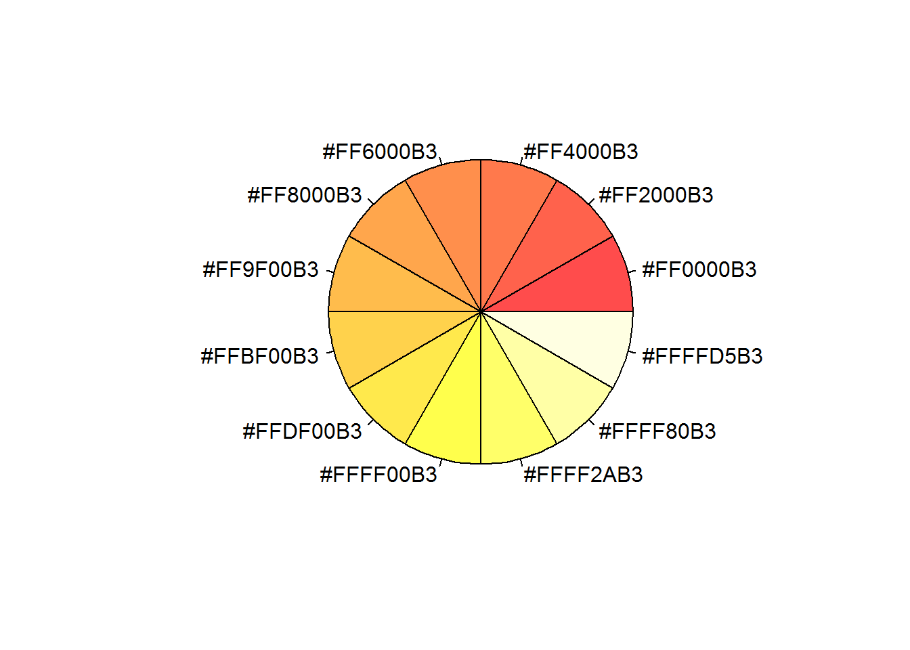
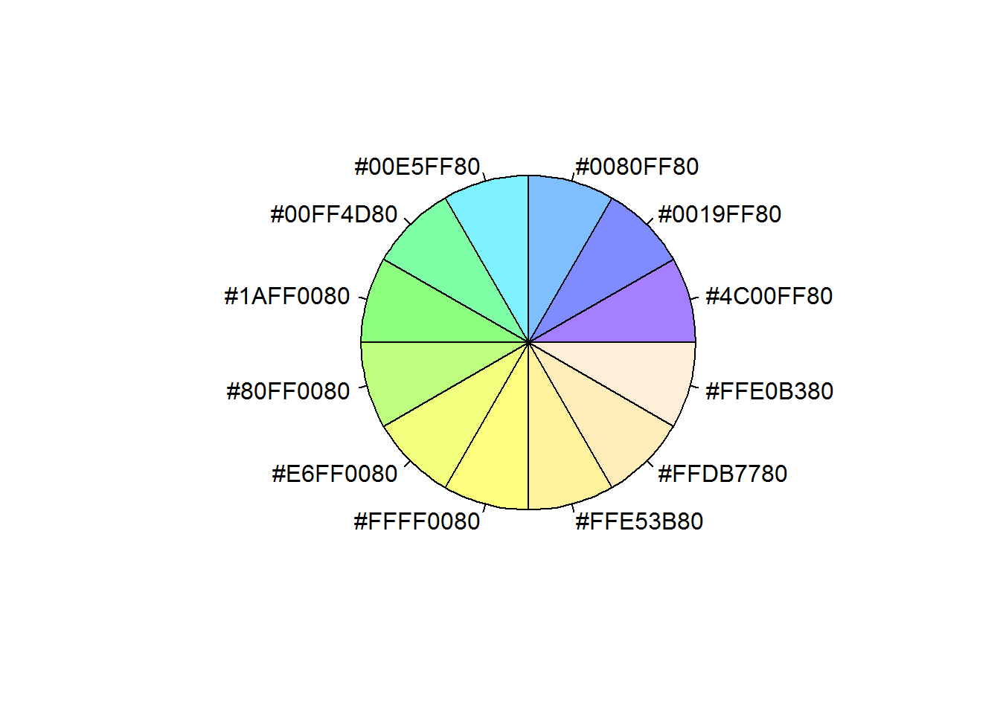
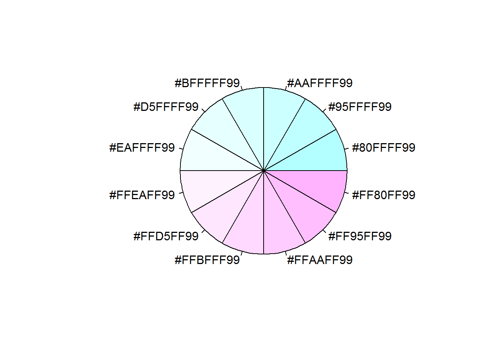
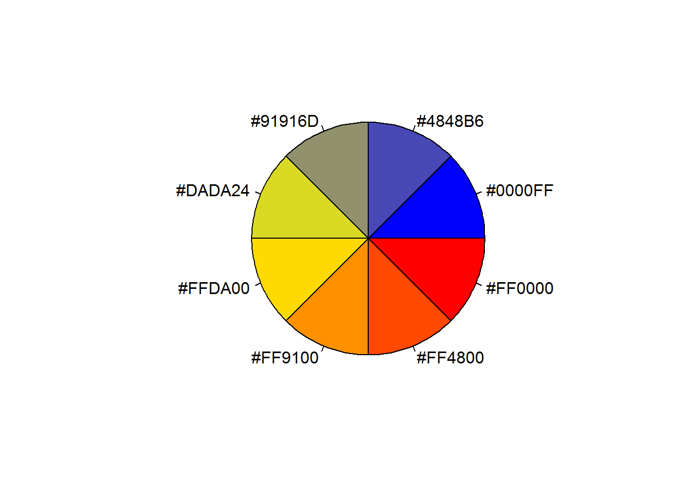
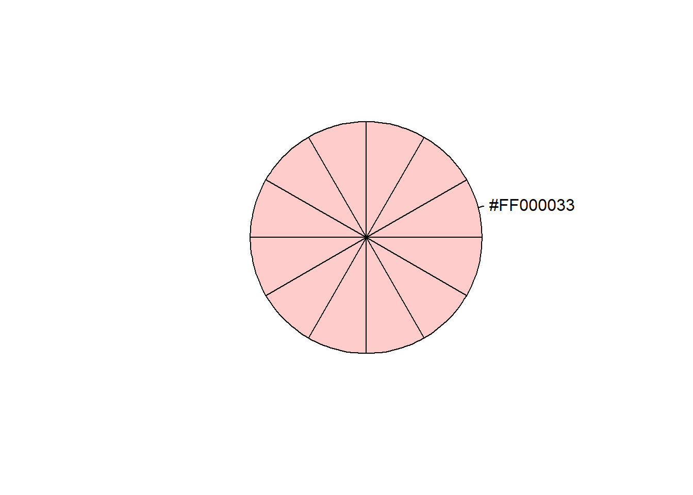

Programs - R
R Initial
- To display R code chunks with code and output use:
{r} x=2 - To display R code output without code use
{r,echo=F} x=2 - To display R code without output use
{r,eval=F} x=2
rm(list=ls()) # Clear variables
if("ggplot2" %in% rownames(installed.packages()) == FALSE) {install.packages("ggplot2")};library(ggplot2)
# Load packagesR Directories and File Manipulation
wd0 <- getwd() # Get current dirctory
dirname(wd0) # Gives parent directory of the current one
dir.create("x") # creates directory x in working dir
dir.create(paste(getwd(),"/x/y",sep="")) # creates directory y within x
file.create(paste(getwd(),"/x/y/example.txt",sep="")) # create a text file
file.remove(paste(getwd(),"/x/y/example.txt",sep="")) # remove a file
unlink("x",recursive=T) # delete entire foldersR Reading and Saving Files
# Function to save figures as pdf or png
pdfOnly<-1;
if(pdfOnly==1){pdf(paste(dir,"/",filename,".pdf",sep=""),width=figWidth_Inch,height=figHeight_Inch)
print(figure)
dev.off()} else{
pdf(paste(dir,"/",filename,".pdf",sep=""),width=figWidth_Inch,height=figHeight_Inch)
print(figure)
dev.off()
png(paste(dir,"/",filename,".png",sep=""),width=png_Width, height=png_Width*figHeight_Inch/figWidth_Inch, units="px")
print(figure)
dev.off()
}
}
# csv files
read.csv(paste("XXX.csv",sep=""), stringsAsFactors = F, header=F)
write.csv(df,file=paste("XXX.csv",sep=""),row.names=F)R Manipulate Data
rm(list=ls())
if(!require(reshape2)){install.packages("reshape2")};library(reshape2) # Load packages## Loading required package: reshape2if(!require(dplyr)){install.packages("dplyr")};library(dplyr) # Load packages## Loading required package: dplyr##
## Attaching package: 'dplyr'## The following object is masked from 'package:ggplot2':
##
## vars## The following objects are masked from 'package:stats':
##
## filter, lag## The following objects are masked from 'package:base':
##
## intersect, setdiff, setequal, unionif(!require(tibble)){install.packages("tibble")};library(tibble) # Load packages## Loading required package: tibble# Create Dummy Data
df<-data.frame(names=c("Z","A","X","W"),freq=c(10,12,2,5),color=c("blue","red","red","green"));print(df)## names freq color
## 1 Z 10 blue
## 2 A 12 red
## 3 X 2 red
## 4 W 5 green# Go from Long to Wide format using dcast
#dcast(data,row1+row2~col1+col2,value.var="value", fun.aggregate=functions (e.g. sum or mean))
df_wide<-dcast(df,names~color,value.var="freq",fun.aggregate=sum,na.rm=T);print(df_wide)## names blue green red
## 1 A 0 0 12
## 2 W 0 5 0
## 3 X 0 0 2
## 4 Z 10 0 0#Go from Wide to Long using melt can ignore measure.vars if want all of them to collapse
#dt3<-melt(dt2, id.vars=c("year","month"), measure.vars=c(""), value.name="",variable.name="Level_m")
df_long<-melt(df_wide, id.vars=c("names"), value.name="freq",variable.name="color");print(df_long)## names color freq
## 1 A blue 0
## 2 W blue 0
## 3 X blue 0
## 4 Z blue 10
## 5 A green 0
## 6 W green 5
## 7 X green 0
## 8 Z green 0
## 9 A red 12
## 10 W red 0
## 11 X red 2
## 12 Z red 0# Aggregate long data to summarize
df_agg<-aggregate(freq~names, data=df_long, sum, na.rm=TRUE); print(df_agg)## names freq
## 1 A 12
## 2 W 5
## 3 X 2
## 4 Z 10# Load pre-loaded data
data(mtcars);head(mtcars)## mpg cyl disp hp drat wt qsec vs am gear carb
## Mazda RX4 21.0 6 160 110 3.90 2.620 16.46 0 1 4 4
## Mazda RX4 Wag 21.0 6 160 110 3.90 2.875 17.02 0 1 4 4
## Datsun 710 22.8 4 108 93 3.85 2.320 18.61 1 1 4 1
## Hornet 4 Drive 21.4 6 258 110 3.08 3.215 19.44 1 0 3 1
## Hornet Sportabout 18.7 8 360 175 3.15 3.440 17.02 0 0 3 2
## Valiant 18.1 6 225 105 2.76 3.460 20.22 1 0 3 1# Add rownames as a column
df_mtcars<-as.data.frame(rownames_to_column(mtcars,"model"));head(df_mtcars)## model mpg cyl disp hp drat wt qsec vs am gear carb
## 1 Mazda RX4 21.0 6 160 110 3.90 2.620 16.46 0 1 4 4
## 2 Mazda RX4 Wag 21.0 6 160 110 3.90 2.875 17.02 0 1 4 4
## 3 Datsun 710 22.8 4 108 93 3.85 2.320 18.61 1 1 4 1
## 4 Hornet 4 Drive 21.4 6 258 110 3.08 3.215 19.44 1 0 3 1
## 5 Hornet Sportabout 18.7 8 360 175 3.15 3.440 17.02 0 0 3 2
## 6 Valiant 18.1 6 225 105 2.76 3.460 20.22 1 0 3 1R Colors
https://www.nceas.ucsb.edu/~frazier/RSpatialGuides/colorPaletteCheatsheet.pdf
http://www.stat.columbia.edu/~tzheng/files/Rcolor.pdf
# Load Packages
if(!require(graphics)){install.packages("graphics")};library(graphics)
if(!require(graphics)){install.packages("graphics")};library(graphics)
# View a single color quickly
x<-adjustcolor("red", alpha.f = 0.2)
pie(rep(1,12),label=x,col=x)# R colors
myPalette1<- rainbow(n=12,alpha=0.9)
myPalette2<- heat.colors(n=12,alpha=0.7)
myPalette3<- terrain.colors(n=12,alpha=1)
myPalette4<- topo.colors(n=12,alpha=0.5)
myPalette5<- cm.colors(n=12,alpha=0.6)
# Custom
myPalette6<- c("red","#fdd67b")
myPalette7<- colorRampPalette(c("blue", "yellow","red"))(8)
pie(rep(1,length(myPalette1)),labels=myPalette1,col=myPalette1)
pie(rep(1,length(myPalette2)),labels=myPalette2,col=myPalette2)
pie(rep(1,length(myPalette3)),labels=myPalette3,col=myPalette3)
pie(rep(1,length(myPalette4)),labels=myPalette4,col=myPalette4)
pie(rep(1,length(myPalette5)),labels=myPalette5,col=myPalette5)
pie(rep(1,length(myPalette6)),labels=myPalette6,col=myPalette6)
pie(rep(1,length(myPalette7)),labels=myPalette7,col=myPalette7)
R Charts
rm(list=ls())
if(!require(reshape2)){install.packages("reshape2")};library(reshape2)
if(!require(dplyr)){install.packages("dplyr")};library(dplyr)
if(!require(tibble)){install.packages("tibble")};library(tibble)
if(!require(ggplot2)){install.packages("ggplot2")};library(ggplot2)
if(!require(RColorBrewer)){install.packages("RColorBrewer")};library(RColorBrewer) ## Loading required package: RColorBrewerif(!require(scales)){install.packages("scales")};library(scales) # For pretty_breaks## Loading required package: scales# Load pre-loaded data
data(mtcars);head(mtcars)## mpg cyl disp hp drat wt qsec vs am gear carb
## Mazda RX4 21.0 6 160 110 3.90 2.620 16.46 0 1 4 4
## Mazda RX4 Wag 21.0 6 160 110 3.90 2.875 17.02 0 1 4 4
## Datsun 710 22.8 4 108 93 3.85 2.320 18.61 1 1 4 1
## Hornet 4 Drive 21.4 6 258 110 3.08 3.215 19.44 1 0 3 1
## Hornet Sportabout 18.7 8 360 175 3.15 3.440 17.02 0 0 3 2
## Valiant 18.1 6 225 105 2.76 3.460 20.22 1 0 3 1# Add rownames as a column
df_mtcars<-as.data.frame(rownames_to_column(mtcars,"model"));head(df_mtcars)## model mpg cyl disp hp drat wt qsec vs am gear carb
## 1 Mazda RX4 21.0 6 160 110 3.90 2.620 16.46 0 1 4 4
## 2 Mazda RX4 Wag 21.0 6 160 110 3.90 2.875 17.02 0 1 4 4
## 3 Datsun 710 22.8 4 108 93 3.85 2.320 18.61 1 1 4 1
## 4 Hornet 4 Drive 21.4 6 258 110 3.08 3.215 19.44 1 0 3 1
## 5 Hornet Sportabout 18.7 8 360 175 3.15 3.440 17.02 0 0 3 2
## 6 Valiant 18.1 6 225 105 2.76 3.460 20.22 1 0 3 1# Custom theme
z_theme <<- theme_bw() +
theme(text = element_text(family = NULL, face = "plain",colour = "black",
size = 16 ,hjust = 0.5, vjust = 0.5, angle = 0, lineheight = 0.9)
, axis.text.x = element_text(size=12)
, axis.text.y = element_text(size=12)
,axis.title.x = element_text(vjust = -1, margin=margin(t=1,unit="line"))
,axis.title.y = element_text(angle = 90, vjust = 2, margin=margin(r=1,unit="line"))
,legend.key = element_blank()
,legend.text = element_text(size = rel(1.0), colour = "black")
,legend.title = element_text(size = rel(1.2), face = NULL, hjust = 0, colour = "black")
,strip.background = element_rect(fill = NA, colour = "black")
,plot.margin = unit(c(1, 1, 1, 1), "lines")
,plot.title= element_text(face="bold", hjust=0,size=18,margin = margin(b=20))
)
#---------------
# Line Chart
#---------------
# Data Prep
l1<-df_mtcars
l1$gear<-as.factor(l1$gear)
# Figure options
titleOn<-1
figWidth_Inch<-10
figHeight_Inch<-8
range_x<-range(l1$wt)
range_y<-range(l1$mpg)
breakx_maj<-0.5
breakx_min<-0.25
# Colors
# Using a Palette Ramp
n = length(levels(l1$gear))
getcol = colorRampPalette(brewer.pal(9, "Set1")) #Palettes (Spectral, Set1, RdYlBl)
#colorRampPalette(c("blue", "red"))( 4)
# Or predefined for variables gear
colorsX <- c( "3" = "red","4" = "blue","5" = "green") # Must have all levels from data colomun "gear"
l1$NewLabel<-paste("Gear ",l1$gear,sep="")
colorsX1<-rownames_to_column(as.data.frame(colorsX),"gear")
l1<-merge(l1,colorsX1,by="gear");
p<-ggplot(l1,aes(x=wt,y=mpg,group=gear))
p <- p + z_theme
p <- p + geom_line(aes(color=gear),stat="identity",position="identity",size=1.5)
#p <- p + geom_line(aes(),color="red",stat="identity",position="identity",size=1.5)
#p <- p + scale_color_manual(values=getcol(n),name="Gear") # using Palette Ramp
p <- p + scale_color_manual(values=unique(as.character(l1$colorsX)),label=unique(as.character(l1$NewLabel)))
p <- p + facet_grid(.~cyl, scales="fixed")
p <- p + guides(fill = guide_legend(override.aes = list(colour = NULL)))
p <- p + if(titleOn==1){ggtitle (paste("mpg by wt for different cyl",sep=""))}else{ggtitle(NULL)}
p <- p + xlab("wt") + ylab("mpg")
p <- p + theme(axis.text.x=element_text(angle=90,hjust=1,vjust=0.5))
p <- p + scale_x_continuous (breaks=(seq(signif((min(range_x)-breakx_maj),2),signif((max(range_x)+breakx_maj),2)
,by=breakx_maj)),
minor_breaks=(seq(signif((min(range_x)-breakx_maj),2),signif((max(range_x)+breakx_maj),2)
,by=breakx_min)),expand=c(0,breakx_min))
p <- p + scale_y_continuous(breaks = pretty_breaks(n = 10))
plot(p)
# To print to PDF or PNG
#pdf("figure.pdf",width=figWidth_Inch,height=figHeight_Inch)
# print(p)
#dev.off()
#png(paste(dir,"/",filename,".png",sep=""),width=png_Width, height=png_Width*figHeight_Inch/figWidth_Inch, units="px")
# print(figure)
#dev.off()